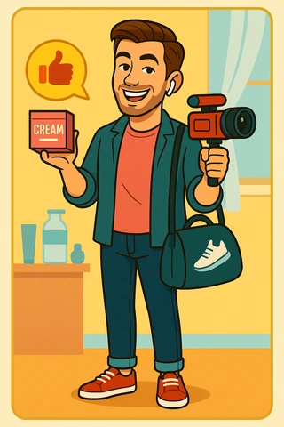
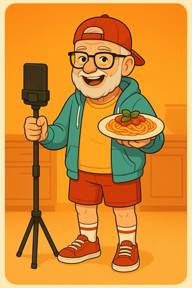
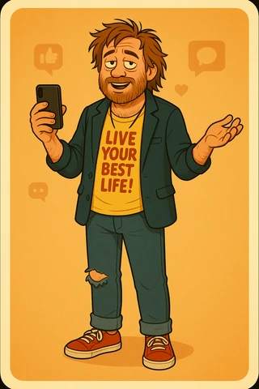
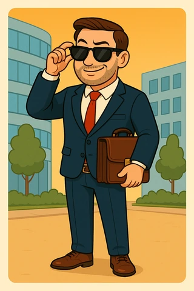

Statistiche finali più semplici · 3 mockup
Oggi la pagina ha otto riquadri tutti insieme. Qui ogni mockup mostra una sola cosa per volta o una sola cosa importante, e il resto va a un tocco di distanza. Stessi dati d'esempio: vince Dariaccioo, l'accusa è «Gli influencer non prendono mai niente sul serio».
Mockup 1 · «A passi» (tre schermate, un tocco per andare avanti)
Una schermata = una domanda. Prima: chi ha vinto. Poi: cosa abbiamo capito. Infine le curiosità, piccole. I badge escono dalla pagina e restano solo nel foglio «Come l'abbiamo finalmente capito».
1 · Chi ha vinto
Dariaccioo ha vinto,
e adesso lo sa
1Dariaccioolo sapeva anche la mamma4
2Bot Pino2
3Bot Franco2
4Bot Mara0
5Bot Lella0
Avanti →
2 · Cosa abbiamo capito
Oggi abbiamo capito che:
Gli influencer non prendono mai niente sul serio
43%



Intanto: Gli hippie sono i più manipolatori · 31%
Come l’abbiamo finalmente capito
Avanti →
3 · Le curiosità (piccole) e i pulsanti
57%
Occhiate storte, ma educate
Il miglior lancio

Manager: 2 voti«Oggi sale sulla torre chi è convinto di poter vivere senza lavorare.»
Mockup 2 · «Una pagina, tre cerchietti» (più divertente, tutto sulla stessa schermata)
Sotto il vincitore c'è un solo grande riquadro giallo: l'accusa. Il resto (Pregiudiziometro, umani contro bot, miglior lancio) diventa tre cerchietti con un numero: tocchi quello che ti incuriosisce e si apre un foglio. Niente scorrimento.
Pagina
Dariaccioo ha vinto, e adesso lo sa
1Dariaccioo4
2Bot Pino2
3Bot Franco2
…e altri 2 · tocca per vedere tutti
Oggi abbiamo capito che:
Gli influencer non prendono mai niente sul serio
43%
Come l’abbiamo finalmente capito
57%Pregiudizio
59/57Umani / bot
Miglior lancio
Toccando il cerchietto «Pregiudizio»
57%
Occhiate storte, ma educate
TG Pregiudizi: cielo coperto da sospetti
Chiudi
Mockup 3 · «La copertina è la pagina» (il più semplice e il più condivisibile)
La schermata finale è la copertina del giornale che già condividiamo: una foto, un titolo, il tuo piazzamento nel bollo. Due soli pulsanti grandi: «Perché?» (apre il foglio) e «Condividi». La classifica e le curiosità stanno a un tocco, in tre schede.
Pagina
IL GIORNALE DELLA TORRE
43%
ci siamo
HO VINTO!4 punti · 1° su 5
«Gli influencer non prendono mai niente sul serio»
Oggi abbiamo capito che: 43% dei sospetti
ClassificaCuriositàNuova partita
Tab «Classifica» aperta
ClassificaCuriosità
1Dariaccioolo sapeva anche la mamma4
2Bot Pinoargento, con il broncio2
3Bot Franco2
4Bot Mara0
5Bot Lellapresente. E già questo0